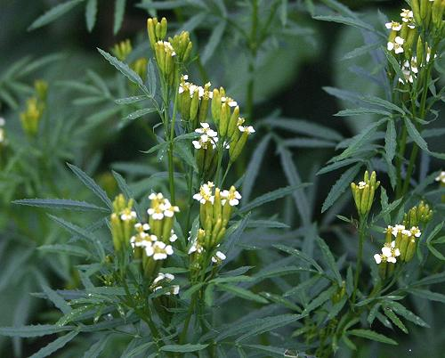
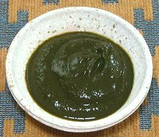

Huacatay

[Black Mint, Muster John Henry, Southern Cone Marigold, Stinking Roger,
Wild marigold; Anisillo (Spanish); Chinchilla, Chiquilla, Chilca, Zuico,
Suico (South America); Huacatay (Peru); Huacataya (Bolivia);
Tagetes minuta]
This plant is native to western South America, but has been
naturalized in numerous areas in Australasia, Asia, North America,
Europe and Africa. Its growth habit is weedy, vertical, and up to 6
feet tall. It has long been used as a culinary flavoring and tea in
Ecuador, Peru, Chile, and Bolivia. It is very strong, so must be used
with discretion so it doesn't overwhelm other flavors.
Huacatay has been recommended as a good substitute for people who
can't stand Cilantro (sometimes blamed on a mutant OR6A2 gene).
Photo by Paul Venter distributed under license
Creative Commons
Attribution-ShareAlike v3.0 unported.
More on Daisy Herbs & Flowers
Huacatay is considered an essential herb for the cuisines of the
Andean Mountains region. It is used informally in many dishes, and
formally in some well known dishes. It is a definitive ingredient
in Locro, a popular Peruvian pumpkin, potato chili and huacatay stew.
It is difficult to substitute, described as having flavors of Basil,
Mint, Lime juice and Tarragon. It is also used in medicinal teas,
and holds up reasonably well to drying.
Commonly called "Black Mint", Huacatay is in no way related to
mints, it's in the Daisy family. The statement that it is a suitable
substitute for Cilantro for people who can't stand Cilantro due to a
mutated OR6A2 gene is closer, but still a bit of a
stretch. Culantro would be a lot closer, and it doesn't have the
OR6A2 problem.
Buying:
Unfortunately, in North America, the only way
to have fresh Huacatay leaves is to grow them yourself. Fortunately,
it is basically an aggressive weed and very easy to grow from seeds,
which are easily available on-line. I have seen frozen leaves in a
large market here in Los Angeles (Burbank) that specializes in
Mexican, Central American and South American foods.
Huacatay Paste

Huacatay Paste is much used in Peru as an ingredient in sauces and the
like, and can be used elsewhere when fresh leaves are not available.
Buying:
Huacatay Paste is important enough it is not
hard to find in North America. My usual specialty market for Mexican,
Central American and South American foods was temporarily out of stock,
so I ordered the photo specimen from Amigo Foods in Florida.
Cooking
The most famous dish using Huacatay Paste is
the Ocopa sauce of Arequipa in southern Peru. It is most commonly served
as a cold appetizer over slices of boiled potatoes, but is also used as
a pasta sauce and in other ways. Huacatay paste is often included in
marinades, particularly for Chicken, and in sauces for fish.
dy_huacaz 170805 - www.clovegarden.com
©Andrew Grygus - agryg@clovegarden.com - Photos on this
page not otherwise credited are © cg1 -
Linking to and non-commercial use of this page permitted